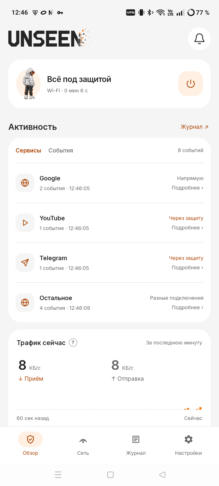

v3.6.4
Windows
Windows x64 · ZIP
Скачай, распакуй архив
и запусти Unseen.exe.
Unseen помогает обходить блокировки.
Привычные сервисы снова рядом.
Бесплатно. Без регистрации и подписки.
Выбирай, где удобнее.
Файлы скачиваются напрямую с GitHub.
Windows x64 · ZIP
Скачай, распакуй архив
и запусти Unseen.exe.
Android 8.0+ · APK
Установи APK и разреши
VPN-подключение.
Android TV 8.0+ · APK
Совсем ранняя версия.
Сейчас — для YouTube.
Все версии в бете. Работа может зависеть от сети и провайдера.

Пара шагов, чтобы начать.
Выбери своё устройство:
Сохрани ZIP-архив и извлеки его в отдельную папку.
Приложение запускается прямо из папки.
Подтверди запрос прав администратора.
Открой файл и разреши установку приложения.
Нажми кнопку включения защиты.
Подтверди системный запрос VPN. Обновление поверх сохраняет настройки.
Перенеси файл на устройство с Android TV 8.0 или новее.
Открой Unseen и подтверди системный запрос VPN.
Нажми «Смотреть YouTube». Фоновый запуск настраивается отдельно.
Ваша поддержка помогает развивать Unseen, исправлять ошибки и поддерживать серверы.
Поддержать проектДобровольно. Без подписки и платных преимуществ.
Мы ещё в бете. Если что-то не работает — напиши нам. Укажи устройство, версию Unseen и тип сети.
Написать разработчикуДа. В Unseen нет регистрации и платной подписки. Добровольная поддержка не открывает дополнительных функций.
Unseen использует системный VPN-интерфейс Android для обработки подключений. Разрешение нужно при первом включении защиты.
Это совсем ранняя версия, сейчас ориентированная на YouTube. Другие приложения не включены. Совместимость зависит от модели телевизора, а фоновый запуск настраивается отдельно.
Смена страны не является функцией Unseen. Доступность сервисов зависит от сети, сервера и доступных способов обхода.